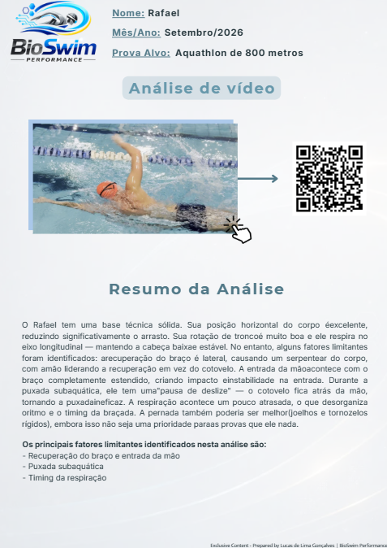

Envie Seus Vídeos
Você grava seu nado seguindo meu protocolo simples (dentro e fora d'água). Compartilhe via Google Drive ou upload seguro.
Pare de adivinhar o que está te segurando. Nossa análise biomecânica identifica os principais fatores limitantes do seu nado e te dá um roteiro claro.
Nada de correções conflitantes. Apenas prioridades claras por ciclo — para você realmente evoluir.
Programa de 12 semanas. 3 análises. Acompanhamento claro. Você verá melhora mensurável no seu nado.
Comece Sua Análise Agora →🔬 Utilizado por nadadores e triatletas • Metodologia baseada em dados

Você recebe correções conflitantes de diferentes treinadores e não sabe o que priorizar.
Dores no ombro estão limitando seus treinos — e você não sabe o porquê.
Você treina muito mas não vê progresso mensurável nos seus tempos.
Você perde tempo tentando adivinhar o que corrigir em vez de treinar de forma eficiente.
O problema não é falta de treino. É falta de direção. Você não precisa de mais volume — você precisa do foco certo.

Cada nadador tem um padrão de braçada único. O segredo é identificar o que realmente está limitando sua eficiência.
É isso que a BioSwim faz — eu transformo vídeos simples em dados objetivos e acionáveis para VOCÊ.
Nada de "Acho que você precisa rodar mais." Em vez disso: "Seu cotovelo esquerdo cai na entrada, aumentando o arrasto. Aqui está o educativo exato para corrigir."
Meu programa de 12 semanas entrega:
Quantos erros vamos corrigir? Depende do seu nado. Alguns nadadores precisam corrigir 2–3 erros em 12 semanas; outros podem precisar de 4–5. Eu me adapto ao que VOCÊ realmente precisa.
Você grava seu nado seguindo meu protocolo simples (dentro e fora d'água). Compartilhe via Google Drive ou upload seguro.
Usando Kinovea e modelos biomecânicos, eu identifico os principais fatores limitantes do seu nado — desde o agarre até a rotação de tronco e estresse no ombro.
Eu entrego um vídeo da análise + relatório em PDF com suas prioridades, educativos específicos e metas de progresso para as próximas 12 semanas.
Na semana 6 e na semana 12, eu reanaliso seu nado. Você verá exatamente o que melhorou, o que vem a seguir e provará que seu investimento está valendo a pena.

Nada de adivinhação. Você recebe dados objetivos para focar no que realmente importa — sua evolução.
Veja exatamente como eu analiso a mecânica da braçada e identifico o que está limitando a performance de cada nadador.
⏱️ Análise de 7 minutos • Exemplo com atleta real

Tenha a clareza que você precisa para evoluir. Três análises em 12 semanas — cada uma focada nas mudanças mais impactantes que você pode fazer.
ou 3 x R$ 109 (sem juros)
✅ Garantia de Satisfação 100%
Não ficou satisfeito com sua análise? Devolvo 100% do seu dinheiro — sem perguntas.
Pagamento seguro via link de pagamento (cartão de crédito, débito ou pix)
Dúvidas? Me chame no WhatsApp ou envie um e-mail para bioswimperformance@gmail.com